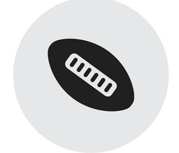

IT Professional with over 10 years of experience specializing in IT department management for international logistics companies.My greatest strength is business awareness, which enables me to permanently streamline infrastructure and applications. Striving to leverage my IT management skills at SanCorp Inc.
Experience
| 2006-12 - 2019 |
Senior Project Manager |
|
Seton Hospital, ME
- Implemented the higghly successful Lean Training and Six Sigma projects.
- Cut costs by 32% in less than six months.
- Reduced the costs of IT maintainence in 2015 by successfully rebuilding the server infrastsucture resulting in over $50000 of annual savings.
|
| 2004-09 - 2012 |
Junior Project Manager |
|
Seton Hospital, ME
- Oversaw all major hospital IT projects for 10+years, focus on cost reduction.
- Cut costs by 32% in less than six months.
- Reduced the costs of IT maintainence in 2015 by successfully rebuilding the server infrastsucture resulting in over $50000 of annual savings.
|
| 2002-08 - 2012 |
IT Support Officer |
|
Seton Hospital, ME
- Oversaw all major hospital IT projects for 10+years, focus on cost reduction.
- Responsible for creating, improving, and developing IT project strategies.
|
Eductaion
| 2002-05 - 2006 |
Master of Computer Science, University of MaryLand |
|
- Graduated Summa Cum Laude.
- Member of Student Association of Computer Science.
|
| 2006-09 - 2012 |
Bachelor of Computer Science, University of MaryLand |
|
- Graduated Summa Cum Laude.
- Member of Student Association of Project Manager.
|
Certifications
| 2010-05 |
PMP - Project Management Institute |
| 2007-11 |
CAPM - Project Management Institute |

Interests
| |
Avid cross country Skier and cyclist. |
| |
Member of Parent Teacher Assesment. |